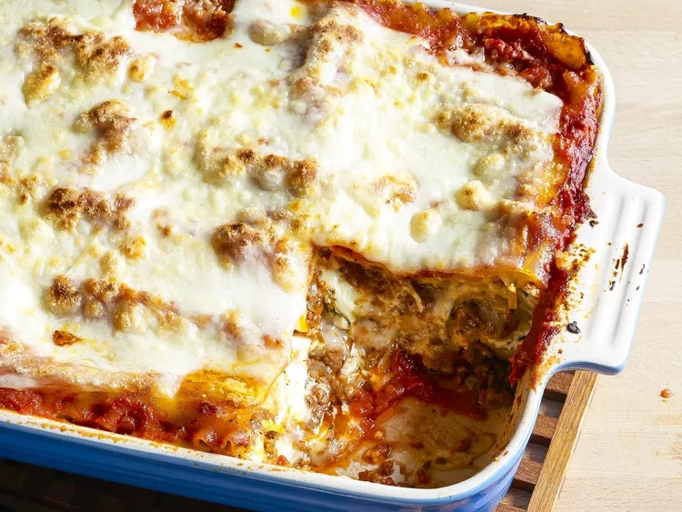

Lasagna

Description
Lasagna is a culinary masterpiece, a harmonious symphony of flavors and textures that delights the senses. Layers of tender pasta sheets, each lovingly embraced by a rich and velvety sauce, create the perfect canvas for this Italian classic. Whether it's the creamy béchamel or the robust tomato sauce, these sauces infuse the dish with a blend of smoothness and zest that is truly irresistible. The generous layers of mozzarella and Parmesan cheese melt together, enveloping the dish in a decadent, gooey embrace that's both comforting and indulgent. Each bite of lasagna is a journey through a world of savory delight, where the sautéed vegetables, fragrant herbs, and choice of meats play their parts to create a medley of diverse and satisfying flavors.
When a perfectly baked lasagna emerges from the oven, its golden crown of bubbling cheese and tantalizing aroma captivate anyone within its vicinity. This dish is not just food; it's an invitation to share and savor life's simple pleasures. With every mouthful, lasagna tells a tale of tradition, warmth, and the joy of gathering around the table with loved ones. It embodies the essence of Italian culinary heritage, offering a slice of comfort and sophistication in every bite, making it a timeless favorite that evokes a sense of warmth and togetherness.
- Lasagna Pasta Sheets: Flat, wide pasta sheets, typically pre-cooked before layering.
- Tomato Sauce: A rich and flavorful tomato-based sauce, which can be homemade or store-bought.
- Ground Meat: Ground beef is commonly used, but you can choose ground pork, turkey, chicken, or a meatless substitute if you prefer a vegetarian version.
- Cheese: A combination of shredded mozzarella and grated Parmesan cheese to create that deliciously cheesy layering.
- Béchamel Sauce: A creamy white sauce made with butter, flour, and milk for a velvety texture.
- Prepare the Ingredients
Gather all the necessary ingredients and prepare them. Cook the lasagna pasta sheets according to the package instructions. While the pasta is cooking, you can brown the ground meat, sauté onions and garlic, and prepare the tomato sauce and béchamel sauce.
-
Layer the Ingredients
Start by spreading a thin layer of tomato sauce at the bottom of a baking dish. Layer with cooked lasagna pasta sheets. Add a layer of ground meat, followed by a layer of béchamel sauce. Sprinkle mozzarella and Parmesan cheese on top. Repeat these layers until you've used up your ingredients, typically ending with a layer of cheese on top.
-
Bake the Lasagna
Cover the baking dish with foil and bake in a preheated oven at around 375°F (190°C) for about 25-30 minutes. Then, remove the foil and bake for an additional 10-15 minutes or until the top is golden brown and bubbly.
-
Rest and Serve
Let the lasagna rest for a few minutes after removing it from the oven. This helps to set and makes it easier to slice into perfect portions. Serve your delicious homemade lasagna with a side of salad or garlic bread.
-
Enjoy!
Sit down with your family or friends and savor the layers of flavors in your homemade lasagna. It's a comforting and satisfying dish that's perfect for gatherings and special occasions.
Feel free to customize your lasagna by adding vegetables or other ingredients to suit your taste, and don't forget to enjoy the process of making this classic Italian dish.